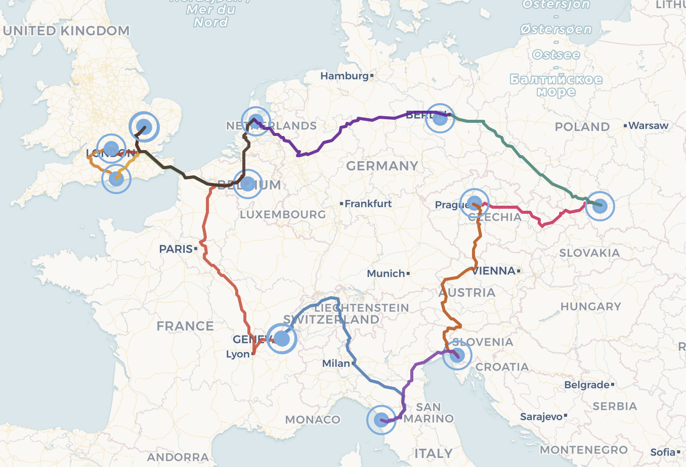

Lessons from an academic tour of Europe by train
On the 8th of June 2026, I left the University of Cambridge for a month-long academic journey across Europe, to meet my peers, explore their research and institutions, and share my own work in early universe cosmology. I visited 8 theoretical physics research institutes, attended one UK collaboration meeting and one conference at CERN. I gave a total of eight presentations of my work, including six seminars and two shorter talks.

I met researchers who I had only known through the pages of their articles. In an academic world, this is no surprise. Many researchers will not attend the same events, due to lack of sponsorship, teaching loads or differing fields. I was able to speak to researchers that I had only glimpsed from afar at major conferences. Beyond the CV line, feeling poorly about conferences or workshops has become rather common, without blaming the organisers as opposed to those habits we have settled in. Nowadays, very few of them give enough time to chat about science; a 5 minute pitch is not how science is done. Beyond the reduced networking time of conferences, dozens of 12 to 15mins talks a day are common practice. When you are young scholar, more likely to be motivated by building new collaborations and chat technical matters within your narrow range of expertise, this usually does not work out apart from meeting future collaborators if they already know of your work or simply making friends. In general, it is also difficult to get any endorsement by more established people unless you have such collaborators and mentors from the start – and we all know how this is rather dependent on where you are born or raised. This trip certainly taught me my own privilege. I realised that I already knew quite a few people of my field, and that, compared to other institutions, I had been given the means to travel during my PhD, with notable flexibility. I realised that coming from Cambridge was a good start to get into conferences and generate interest in my work.
Leaving further discussion of such matters for when I am a fully unbiased exile of Cambridge, I should explain why I decided to go on such a trip, even with a single month of preparation. As conferences did not allow for it, I wanted to find a better way to engage with my peers. Those who know me could first certainly tell you about my constant thirst for challenge or my dream to go round Europe by train; true statements. I have an ‘interesting’ relationship with trains. This might be due to the French way of constantly complaining when all is great, though put with British words here. Despite all the delays and unpleasant situations (as felt with all transport) I have encountered in my life, I still love trains, for both the scenery and the self-contained moment set aside to rest, think or work productively. Trains are simple and a good metaphor of life as sung in many songs. Trains are both hate and love, pros and cons, very much like everything else and it’s usually up to us to find the good bits to make it bearable up to wonderful. My appreciation of trains is nothing but a hardened commitment to them for very specific reasons.
In May, I was close to the end of my PhD, starting to write the thesis with no postdoctoral job lined up for the next academic year after sending 75 applications and research proposals in the past half year. With nothing to lose and still a full motivation to become an academic, I decided that the solution was to travel and network more, a lot more. Meeting people in person and visiting institutions could have in fact helped me securing a few long-term visits (usually a few weeks or months) to survive until the next round of applications (for which networking is also beneficial) in what appears to be among the driest and most saturated academic job markets ever (at least in cosmology and theoretical cosmology, see a summary for the UK here). My goal and dream of being an academic joined forces then with another long-term commitment to be a decently sustainable human (by this you should understand climate or Earth-friendly, but really, we should say human-friendly).
I do not believe that the best course of action is to be a professional ‘recyclist’ […] but rather set an example within my circles. […] Putting seeds in the ground and in minds is what I believe in.
The PhD bubble gave me less time to be involved in concrete action, for instance through societies fighting for change and awareness. With age, I have also grown a form of chaotic approach to climate change, accepting its now inevitable effects and thinking that nothing could be implemented to prevent further disasters without international acts and enforcements for both public and private spheres. With that kind of philosophy, you are only left with either preparing yourself for survival, or you hope that the next generation in power will act. I do not believe that the best course of action is to be a professional ‘recyclist’ or deprive myself of all material comforts but rather set an example within my circles. Many small and imperfect stones make a mountain, where a single perfect stone will not. After all, none of us can be perfect environmentalists, and all of us would be called in a scandal for it. I would rather see everyone hypocritical but calling for change than a few on ecological retreats in the woods. Some people you will convince are more convincing, or powerful and motivated than others. Putting seeds in the ground and in minds is what I believe in.
There is more at stake in green academia than most think […].
Even among the most educated people on Earth, who I meet every day through my job, and most of whom have a strong sense of humanistic values or an understanding of why their children’s future is at risk, climate action or thoughts boils down to repressed fear and good old recycling. Some choose to feel worth the carbon, some say that AI and tech can save us all, others feel too scared or powerless to think they can do anything. Some will say that academic careers are incompatible with climate action. For instance, travelling sobriety means less exposure of your work at conferences, since they are still organised in person across the globe with very few convincing online attendance or continental hub systems. Many in my field would still say today that one needs to visit the US to secure a permanent academic job. Clearly and for the same reasons that no country would want to risk their economy first if no one else does, none of us want to be the green sheep. If my peers, who understand numbers, scientific facts, collaboration and community, as well as greater purpose more than most, cannot or will not show the example or lead the way, who will? Clearly climate scientists and activists have not been enough in the past decades. There is more at stake in green academia than most think, and this is what I tried to share with my peers at every single stop of this trip.
[…] one needs to convince sponsors, researchers and faculties to be facilitating train travel and more generally sober (reduced) travelling.
In my four years of academia, I managed to cap my professional travels at three return European flights. My general rule is to keep those within a quarter of the ideal annual carbon footprint of a citizen (~2 tonsCO2) and to always take trains for a feasible day-long journey. Feasible unfortunately includes ‘affordable’, and as long as flying will be the norm and green travelling not rewarded, it is at least a financial sacrifice in general, especially for under-funded institutions. Before any form of enforcement, one needs to convince sponsors, researchers and faculties to be facilitating train travel and more generally sober (reduced) travelling. This is very comparable to what should be done for meat consumption. Facilitation can be financial of course but not only; I know very few scholars who received a funded (and very advantageous) Interrail pass (or asked for it). Most faculties would also struggle to fund or allow nights on the way to an event or more than one stop per expense claim. If every actor is ready to see visits condensed into a few days, weeks, or months, the Interrail pass is certainly a simple solution to overpriced train infrastructures, and we will see below that money can be saved beyond the ticket to ride. This whole discussion is a rather European one; we are incredibly lucky to have this train network, and we should make the most of it.
[…] this tour corresponds to a loop of about 6,500km […, and] at most 300kg [of CO2, …, while flying] would have cost at least 2 tons […] or the annual target for your entire lifestyle.
Let me now feed you with the concrete example of my trip. Six weeks before departure, I applied to an independent travelling grant provided by my College (Wolfson, Cambridge), typically helpful for funding projects rather than standard trips. After receiving a positive answer a month before departure, I emailed all European research groups with shared interests, sometimes using my own acquaintances from conferences or my contacts’ circles. Close to all replied very kindly within a few days to my green trip initiative and offered to have me as speaker, many contributing additional funding. In the weeks following these numerous replies and offers, I managed to settle and confirm the logistics for ten stops in a month, or 50% more than what I had originally planned. It certainly took quite a few emails, a decent amount of stress, dropping unfeasible spacetime locations, and some compromises on the format of the talks, but this could have been avoided by planning early enough. I calculated recently that this tour corresponds to a loop of about 6,500km and not so less decent hours of work on the train. We need the average emitted mass of CO2 per passenger per kilometre for each transport, which are good to keep in mind, to evaluate the magnitude of travel carbon footprints. A train journey in Europe can emit 5 up to 45g of CO2 per passenger and kilometre, while 150 up to 250g for short flights (slightly better for longer flights, as departure burns a lot of fuel but then flying for much longer). My carbon footprint on this trip was thus at best 30kg of CO2 overall and at most 300kg (worst case result, less than 15% of the annual citizen goal), or at most 30kg per stop. If I had flown from e.g. London to each of the mainland Europe destinations of this trip over a few months (corresponding to about 2x7200km), this would have cost at least 2 tons of CO2 (or the annual target for your entire lifestyle) and up to 3.6 tons. Assuming I was doing the same round trip and that airports were available to essentially travel with straight lines (~4000km), then it would still have been 600kgCO2 and up to a ton, so at least twice as bad as the worst trains of Europe. In other words, the carbon emissions saved by train travel are tremendous and certainly justify a bit of change in our habits.
Sustainable travels will make science better.
As the carbon footprint is not the standard metric yet and if some of us still need more than duty, it is good to look at the overwhelming benefits of such a trip according to usual expectations. My expenses for a month of travelling (including host-paid expenses, about 50%) for accommodation, generous subsistence, transports, insurance, and weekends between working days, sum up to about 3,000£ or an average of 100£ per night. Without months of planning, this is still around, if not below, the average of academic trips (at least from my own experience). Only 500£ correspond to transport expenses and, thanks to the interrail pass use at this scale, beats flying even without luggage. With earlier notice of my hosts, I would have secured extended and more convenient speaking opportunities, including more funding. As I found out, there usually is funding for visitors through various grants, as opposed to funding for recruitment. Some institutes sometimes struggle to find new speakers or like to see new heads and research. The academic benefits of visiting institutes are, I believe, tremendous. I already stated earlier my issues regarding conferences, and, although we start seeing some new initiatives, these will certainly need better adaptation to climate stakes. This is a need as we will not all be able to be invited everywhere and whenever to each other’s institutes. However, once you get invited like I was, everyone makes so much more of your visit. That is a good thing because academics tend to focus on their own little thing, unless (rare) money is spent. A single talk a day, sometimes with a small crowd, sometimes with experts only, sometimes with no experts but your host, is how you get the best attention, exposure and most importantly questions and triggered brainstorms. My favourite talk had four people in the room. That month I found more academic intimacy than I had ever before, finding out some of us had the same thoughts and ambitions, and that some exciting collaborations could grow out of them. One might ask what this has to do with trains: sustainable travels will make science better.
With thanks to Sophia J. for her advice.